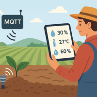

Na agricultura, o MQTT é usado para monitorar fatores ambientais, como umidade do solo, temperatura e umidade, permitindo que os agricultores tomem as medidas adequadas.
Na automação industrial, o MQTT pode monitorar o processo de fabricação de ponta a ponta, garantindo qualidade consistente e identificando problemas sistêmicos na cadeia de produção.
No transporte, o MQTT é usado para monitorar semáforos, parquímetros e a localização em tempo real do transporte público, sempre respeitando o ecossistema e os baixos requisitos de largura de banda.